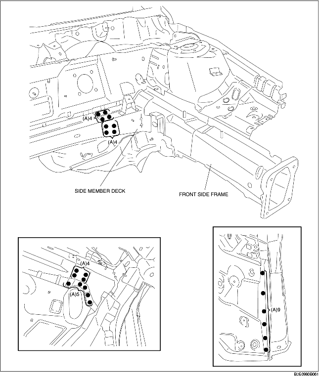
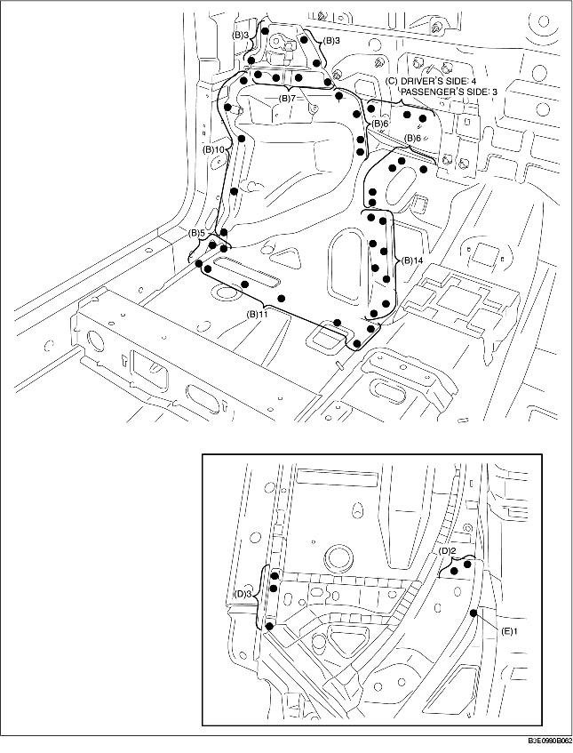
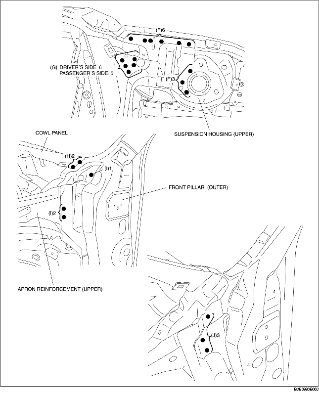

1. Drill the 26 locations indicated by (A).

2. Drill the 65 locations indicated by (B), 4 locations on the driver's side indicated by (C), and 3 locations on the passenger's side.
3. Drill the 5 locations indicated by (D) from the bottom.
4. Drill the 1 location indicated by (E) from the bottom, as it cannot be seen from the interior.

5. Drill the 9 locations indicated by (F), 6 locations on the driver's side indicated by (G), 5 locations on the passenger's side.
6. When the front side frame component is being removed, the hinge pillar (inner) may interfere with the apron reinforcement (upper) and make removal difficult, drill the 2 locations indicated by (H), 3 locations indicated by (I), and then open the front pillar (outer) outward.
7. Drill the 3 locations indicated by (J), and remove the front side frame component.
